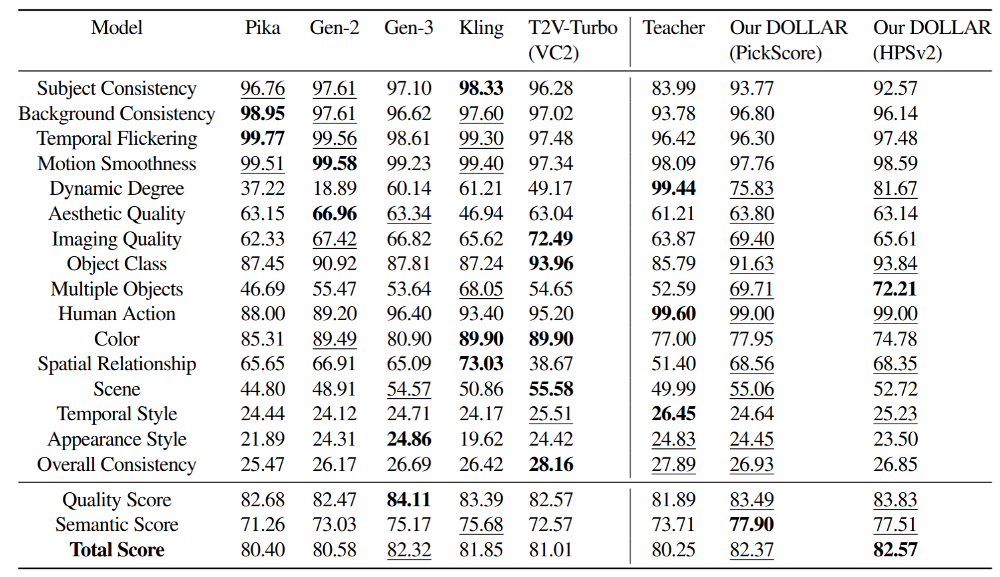

4-step Inference
Diffusion probabilistic models have shown significant progress in video generation; however, their computational efficiency is limited by the large number of sampling steps required. Reducing sampling steps often compromises video quality or generation diversity. In this work, we introduce a distillation method that combines variational score distillation and consistency distillation to achieve few-step video generation, maintaining both high quality and diversity. We also propose a >latent reward model (LRM) fine-tuning approach to further enhance video generation performance according to any specified reward metric. This approach reduces memory usage and does not require the reward to be differentiable.
Our method demonstrates state-of-the-art performance in few-step generation for 10-second videos (128 frames at 12 FPS). The distilled student model achieves a score of 82.57 on VBench, surpassing the teacher model as well as baseline models Gen-3, Gen-2, T2V-Turbo, Kling and Pika. One-step distillation accelerates the teacher model's diffusion sampling by up to 278.6 times, enabling near real-time generation. Human evaluations further validate the superior performance of our 4-step student models compared to teacher model using 50-step DDIM sampling.
The teacher model is a pre-trained text-to-video (T2V) model without any distillation and it samples with 50 steps following DDIM schedule. Variational score distillation (VSD) is a baseline distillation method to improve diffusion model efficiency in 3D and image synthesis, by aligning the distribution between teacher and student diffusion models. Consistency distillation (CD) enforces the consistency loss as another distillation method from a pre-trained teacher model Denoising diffusion policy optimization (DDPO) is a reinforcement learning method to optimize the diffusion sampling policy.
Overview of the training pipeline of our DOLLAR. The few-step generator is trained to generate high-quality samples from random noise in latent space, guided by a combination of variational score distillation (VSD), consistency distillation (CD), and latent reward model (LRM) fine-tuning objectives. VSD loss enhances sample quality, albeit with a risk of mode collapse, while CD loss increases sample diversity without compromising generation quality. The LRM enables reward-based optimization to further improve sample quality, by bypassing the large, pixel-space reward model and the decoder, thereby reducing memory usage and removing the need for differentiable reward models.
Our DOLLAR (HPSv2) and DOLLAR (PickScore) models are evaluated against baselines on VBench evaluation benchmark, including 16 different reward metrics with higher value indicating better performance. The highest value in each metric is marked in bold and 2nd and 3rd underlined. Our methods with 4 inference steps achieve superior performance over the baselines including Pika, Gen-2, Gen-3, Kling, T2V-Turbo and our teacher model by higher total scores. The highest semantic scores of our models indicate a significant improvement over baselines for text-video alignment.
Explore the details of our Ablation Study on a separate page.